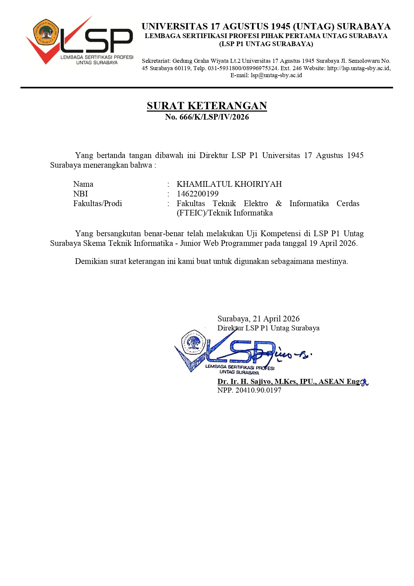
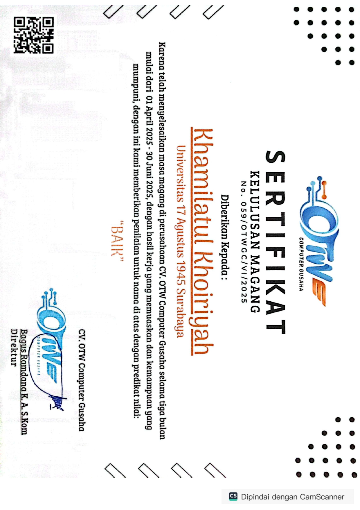

Tentang Saya
Full Stack WEB Developer
Saya adalah lulusan Teknik Informatika 2026 dengan ketertarikan di bidang web development, khususnya sebagai Full Stack WEB Development. Passion saya adalah menciptakan solusi digital yang tidak hanya fungsional, tetapi juga efisien dan user-friendly.
Saya memiliki keahlian dalam berbagai teknologi seperti HTML, CSS, JavaScript, MySQL, serta framework PHP seperti Laravel dan CodeIgniter, dan juga memiliki pengetahuan dasar Golang. Saya telah bersertifikasi BNSP sebagai Junior Web Programmer, dan terus mengikuti perkembangan tren serta best practice terbaru dalam dunia web development.
Sertifikasi Keahlian
Junior Web Programmer
Sertifikasi Kompetensi (BNSP)
2026-2029

assets/images/sertifikat-junior-web-programmer.jpg
Pengalaman Magang
WEB DEVELOPER
CV. OTW Computer Guasaha
2025
Merancang bangun website pembayaran tagihan sekolah dengan integrasi payment gateway. Kegiatan dimulai dari pengumpulan dan analisis kebutuhan, perancangan alur sistem, pembuatan desain UI/UX menggunakan Figma, hingga implementasi website menggunakan HTML, CSS, JavaScript, dan CodeIgniter 4. Mengembangkan fitur login, dashboard admin dan siswa, pengelolaan data siswa dan tagihan, pembayaran, riwayat transaksi, serta integrasi payment gateway Midtrans.

assets/images/sertifikat-magang.jpg
Pengalaman Organisasi
Ketua IPPNU Dusun Kradenan
2020 - 2023
Memimpin dan bertanggung jawab atas pelaksanaan program kerja organisasi
Komandan KPP DKAC Kecataman Sarirejo
2020 - 2022
Memimpin kegiatan organisasi CBP-KPP di tingkat kecamatan.
Bendahara PAC IPPNU Kecamatan Sarirejo
2022 - 2024
Mengelola keuangan organisasi secara transparan dan akuntabel
Anggota Humas Himatifta Untag Surabaya
2023 - 2024
Membuat dan menyebarluaskan informasi kegiatan Himatifta melalui berbagai media sosial.
Kadiv Humas Himatifta Untag Surabaya
2024 - 2025
Mengoordinasikan, mengatur, dan mengawasi kerja Divisi Humas sekaligus memastikan informasi kegiatan tersampaikan dengan baik.
Pemangku Adat PI UKM Pramuka Untag Surabaya
2024-2025
Mengawasi pelaksanaan tata tradisi, dan mengelola jalannya upacara adat dalam Ambalan Pramuka Penegak putri.
Wakil Ketua PAC IPPNU Kecamatan Sarirejo
2024-2026
Membantu Ketua dalam mengoordinasikan kegiatan dan program kerja organisasi serta memastikan pelaksanaannya berjalan dengan baik.
Pendidikan
MTsN Gresik
2016 - 2019
Ilmu Pengetahuan Alam
MAN 2 Gresik
2019 - 2022
S1 Teknik Informatika
UNTAG Surabaya
2022 - 2026